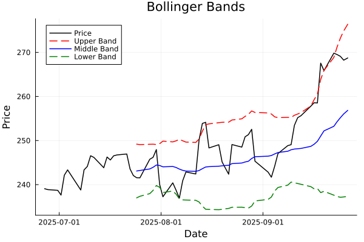

Current Strategy: BEARISH
Stock Analysis Summary for SOXX
Period: 3mo
Date Range: 2025-06-16T13:30:00 to 2025-09-12T13:30:00
Latest Price: 255.64
RSI(14): 63.33
MACD: 2.2847, Signal: 1.5675
Recent Signals (Last 30 days):
Buy Signals: 5
Sell Signals: 9
Strategy: BEARISH
Signals (Last 30 Days)
| Signal Type |
Count |
| Buy Signals |
5 |
| Sell Signals |
9 |
Technical Indicators
Relative Strength Index (RSI)

RSI measures the speed and change of price movements. Values above 70 indicate overbought conditions
(potential sell signal), while values below 30 indicate oversold conditions (potential buy signal).
Moving Average Convergence Divergence (MACD)

MACD shows the relationship between two moving averages of a security's price.
The MACD line crossing above the signal line is bullish, while crossing below is bearish.
The histogram shows the difference between MACD and signal line.
Bollinger Bands

Bollinger Bands consist of a middle band (20-day SMA) with an upper and lower band.
Price reaching the upper band may indicate overbought conditions, while reaching the lower band may indicate
oversold conditions. The width of the bands indicates volatility.
Advanced Technical Analysis
Fibonacci Retracement

Fibonacci retracement levels (23.6%, 38.2%, 50%, 61.8%, etc.) are horizontal lines that indicate where
support and resistance are likely to occur based on Fibonacci numbers. These are important levels
where price might reverse direction.
All-Time Highs Analysis

This chart marks points where the price reached all-time highs within a specified lookback window.
All-time high points often act as psychological resistance levels and may signal potential trend
strength or market euphoria.
Moving Average Crosses (Golden Cross & Death Cross)

A Golden Cross occurs when a shorter-term moving average crosses above a longer-term moving average,
typically the 50-day MA crossing above the 200-day MA, indicating a potential bullish trend.
A Death Cross is the opposite, potentially signaling a bearish trend.
Volume Analysis

Volume analysis examines the number of shares traded over time. High volume often confirms price movements,
while price changes on low volume may be less reliable. Volume spikes can indicate potential reversal
points or trend confirmations.
AI decisions from Trading Signals
Last 10 trading signals (most recent first)
SELL - 2025-09-12T13:30:00 (255.64)
SELL - 2025-09-11T13:30:00 (255.19)
BUY - 2025-09-10T13:30:00 (253.45)
SELL - 2025-09-10T13:30:00 (253.45)
SELL - 2025-09-04T13:30:00 (244.17)
SELL - 2025-08-29T13:30:00 (245.32)
SELL - 2025-08-20T13:30:00 (243.74)
SELL - 2025-08-14T13:30:00 (254.14)
BUY - 2025-08-13T13:30:00 (253.88)
SELL - 2025-08-13T13:30:00 (253.88)